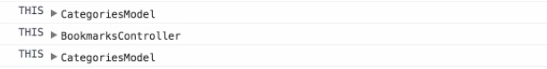
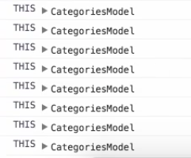

In Angular we want to keep our controllers small and focused on the view that it is controlling. We accomplish this by moving as much logic and state as we can into models.
Angular 2 introduced observables and async pipes which makes it really easy to manage state and communicate that directly to our template.
We can start to point our Angular 1 applications in that direction by binding to our models directly from within our controllers. In this lesson we will see a simple example of this technique and a slightly more advanced case where we lose the lexical reference to the this keyword.
We're also going to do a bit of review as we build out the bookmarks component for this example. I have created a BookmarksModel, which you can see here, and I have added it to the CommonModule.
models/bookmarks.model.js
class BookmarksModel {
constructor($q) {
'ngInject';
this.$q = $q;
this.bookmarks = [...];
}
getBookmarks() {
return this.$q.when(this.bookmarks);
}
}common.js
import angular from 'angular';
import BookmarksModel from '.models/bookmarks.model';I've also started creating a bookmarkscomponent and have added the styles and the HTML, which you can see here. In the HTML we're just doing an ng-repeat over the bookmarks collection and here are the styles with the active style being the most important one.
bookmarks/bookmarks.html
<div class="bookmarks">
<div ng-repeat="bookmark in bookmarksListCtrl.bookmarks">
<button type="button" class="close"></button>
<button type="button" class="btn btn-link">
<span class="glyphicon glyphicon-pencil"></span>
</button>
</div>
</div>bookmarks/bookmarks.styl
.bookmarks
.active
span, & > a
color #5bc0de
padding-top 96px
padding-left 24pxWe'll get started by jumping into the bookmarks controller. We're going to define our BookmarksController class, and then we will define our constructor, and we're going to pass in the BookmarksModel.
bookmarks.controller.js
class BookmarksController{
constructor(BookmarksModel) {
}
}We'll add in ngInject, and then from there we will assign a local reference to the BookmarksModel. Then in our $onInit event hook we're going to fetch the bookmarks from the BookmarksModel. Then we will assign the results of that to this.bookmarks.
bookmarks/bookmarks.controller.js
class BookmarksController{
constructor(BookmarksModel) {
'ngInject';
this.BookmarksModel = BookmarksModel;
}
$onInit() {
this.BookmarksModel.getBookmarks()
.then(results => this.bookmarks = results);
}
}
export default BookmarksController;From there let's export this, and then we'll jump into our component, and we'll hook this up so import template. Then we'll import the controller. Then let's import the styles. From there let's define our component configuration object so bookmarksComponent.
bookmarks/bookmarks.component.js
import template from './bookmarks.html';
import controller from './bookmarks.controller';
import './bookmarks.styl';
const bookmarksComponent = {};Then we'll set the template, the controller, and controllerAs we'll give it a property of or value of bookmarkListCtrl. From there let's export this.
bookmarks/bookmarks.component.js
const bookmarksComponent = {
template,
controller,
controllerAs: 'bookmarkListCtrl'
};
export default bookmarksComponent;Then we will hop into our bookmarks module, and we'll build this out, import angular from angular.
Then we will import the bookmarksComponent. Then we'll define our module, so BookmarksModule = angular.module.
bookmarks/bookmark.js
import angular from 'angular';
import bookmarksComponent from './bookmarks.component';
const BookmarksModule = angular.module()We'll give it a name of bookmarks, no dependencies, and then we'll add our component to it using .component, bookmarks as the selector, and we'll attach the bookmarksComponent object to that.
bookmarks/bookmark.js
const BookmarksModule = angular.module('bookmarks', [])
.component('bookmarks' bookmarksComponent);
export default BookmarksModule;We'll export the BookmarksModule, and then from there we'll hop into our components module and we'll add this as a dependency so it is available for the rest of the application.
components/components.js
import angular from 'angular';
import CategoriesModule from './categories/categories';
import BookmarksModule from './bookmarks/bookmarks'
const ComponentsModule = angular.module('components', [
CategoriesModule.name,
BookmarksModule.name
]);Now that we've imported it let's add it in as a dependency, and then from there let's hop into app.html. We're going to replace this h1 tag with a bookmarks component. Now if we hop into the browser we'll see not only categories, but we can see bookmarks on the right-hand side.
app/app.html
<div class="app">
<div class="container-fluid">
<div class="row">
<div class="col-sm-3 col-md-2 sidebar">
<categories></categories>
</div>
<div class="col-sm-9 col-md-10 col-md-offset-2 main">
<bookmarks></bookmarks>
</div>
</div>
</div>
</div>
The next step is when we click a category we want to show only the bookmarks for that category. How we're going to do that is we're going to first jump into the CategoriesModel, and we're going to create a mechanism to store the current category.
So this.currentCategory = null, and then from we're going to add a getter and a setter method so that we can getCurrentCategory which will return this.currentCategory, and then we'll create a setter method called setCurrentCategory that will accept a category parameter and then assign that to this.currentCategory.
models/categories.model.js
class CategoriesModel {
constructor($q) {...}
getCategories() {...}
setCurrentCategory(category)
getCurrentCategory() {
return this.currentCategory;
}Then from there let's hop into the categories controller, and we're going to update onCategorySelected to when a category item is selected. We're going to capture that category item and pass that into the categories model to store that value.
categories/categories.controller.js
class CategoriesController {
constructor(CategoriesModel) {...}
$onInit() {...}
onCategorySelected(categories) {
this.CategoriesModel.setCurrentCategory(category);
}
}Now we're also going to create another method called isCurrentCategory. We'll pass in a category item, and then we're just going to first check if there is a current category by calling this.CategoriesModel, getCurrentCategory.
categories/categories.controller.js
class CategoriesController {
constructor(CategoriesModel) {...}
$onInit() {...}
onCategorySelected(categories) {
this.CategoriesModel.setCurrentCategory(category);
}
}If there is then we're going to compare the ID of the item returned by getCurrentCategory to the category item that we passed in.
categories/categories.controller.js
isCurrentCategory(categories) {
return this.CategoriesModel.getCurrentCategory() &&
this.CategoriesModel.getCurrentCategory().id === category.id;
}This is the first simple example of binding to a model as we'll see when we hook in ng-class. We're going to toggle on an active property, which we saw in the style sheet that we looked at earlier.
categories/categories.html
<span class="logo">
<img class="logo" src="assets/img/eggly-logo.png">
</span>
<ul class="nav nav-sidebar">
<li
ng-class="active"
ng-repeat="category in categoriesListCtrl.categories">
<category-item
selected="categoriesListCtrl.onCategorySelected(category)"
category="category"></category-item>
</li>
</ul>From here active is going to be applied when categoriesListController.isCurrentCategory, and the category we pass in evaluates to true. We're also going to update the logo to capture an ng-click, and from there we're going to call categoriesListController.onCategoriesCelected to...then we'll pass in the value of null.
categories/categories.html
<span class="logo" ng-click="categoriesListCtrl.onCategoriesSelected">
<img class="logo" src="assets/img/eggly-logo.png">
</span>In this case when you click to logo we want to just clear that out. We'll hop into the browser. You can see that when we click a category that it is maintaining its state. Now what we want to do is set it up so that when we click on a category we filter the bookmarks.
The first thing we need to do is go into the BookmarksController, and we're going to inject the CategoriesModel. From there we'll store a local reference, and then we're going to create a local reference called getCurrentCategory to the reference or to the getCurrentCategory method on the categories model.
bookmarks/bookmarks.controller.js
class BookmarksController{
constructor(BookmarksModel, CategoriesModel) {
'ngInject';
this.BookmarksModel = BookmarksModel;
this.CategoriesModel = CategoriesModel;
}
$onInit() {
this.BookmarksModel.getBookmarks()
.then(results => this.bookmarks = results);
this.getCurrentCategory = this.CategoriesModel.getCurrentCategory;
}
}
export default BookmarksController;This is simply a pass through property, but now what we're going to do is then add in a filter, and we're going to filter on the category property. We're going to compare that against the current category name.
bookmarks/bookmarks.html
<div class="bookmarks">
<div ng-repeat="bookmark in bookmarksListCtrl.bookmarks"
| filter:{category:bookmarksListCtrl.getCurrentCategory}>
<button type="button" class="close"></button>
<button type="button" class="btn btn-link">
<span class="glyphicon glyphicon-pencil"></span>
</button>
</div>
</div>The idea is that when this filter runs it's going to call bookmarksListController.getCurrentCategory, which is really going to call getCurrentCategory on the model. We're going to click this, and you'll notice that nothing is happening. Let's see what is going on here.

We'll hop into the current category, or rather the category model, and let's just trace out what this is within this particular method.
models/categories.model.js
class CategoriesModel {
constructor($q) {...}
getCategories() {...}
setCurrentCategory(category)
getCurrentCategory() {
console.log('THIS', this);
return this.currentCategory;
}Refresh, and you can see here that we have CategoriesModel, so we have four of these on the left-hand side, but then we have THIS = bookmarksController, which is obviously not what we want to happen. The reason why that's happening is because we're overriding the lexical reference to this.

What we need to do is bind the getCurrentCategory method back to the CategoriesModel. Just by adding .bind to this.CategoriesModel now we're saying call this method but call it within the context of CategoriesModel.
bookmarks/bookmarks.controller.js
class BookmarksController{
constructor(BookmarksModel, CategoriesModel) {...}
$onInit() {
this.BookmarksModel.getBookmarks()
.then(results => this.bookmarks = results);
this.getCurrentCategory = this.CategoriesModel.getCurrentCategory.bind(this.CategoriesModel);
}
}You can see here when we click this that the filter is now working, and if we look in the console it's categories model all the way down.


Let's just review what we've done up to this point. In CategoriesModel we've created a mechanism to set the currentCategory and then retrieve the currentCategory.
models/categories.model.js
class CategoriesModel {
constructor($q) {...}
getCategories() {
return this.$q.when(this.categories);
}
setCurrentCategory(category) {
this.currentCategory = category;
}
getCurrentCategory() {
return this.currentCategory;
}
}Then from there within the CategoriesController we are setting the current category, but we are also testing for the current category as well so that we can apply an active filter.
categories/categories.controller.js
class CategoriesController {
constructor(CategoriesModel) {...}
$onInit() {...}
onCategorySelected(categories) {
this.CategoriesModel.setCurrentCategory(category);
}
isCurrentCategory(categories) {
return this.CategoriesModel.getCurrentCategory() &&
this.CategoriesModel.getCurrentCategory().id === category.id;
}
}Then in the BookmarksController we're setting this.getCurrentCategory to the getCurrentCategory on the categories model which gets called by the filter.
bookmarks/bookmarks.html
<div class="bookmarks">
<div ng-repeat="bookmark in bookmarksListCtrl.bookmarks"
| filter:{category:bookmarksListCtrl.getCurrentCategory}>
<button type="button" class="close"></button>
<button type="button" class="btn btn-link">
<span class="glyphicon glyphicon-pencil"></span>
</button>
</div>
</div>But then we had to add in the .bind to keep the reference to the categories model correct. This is how you bind to a model in an Angular 1 application.